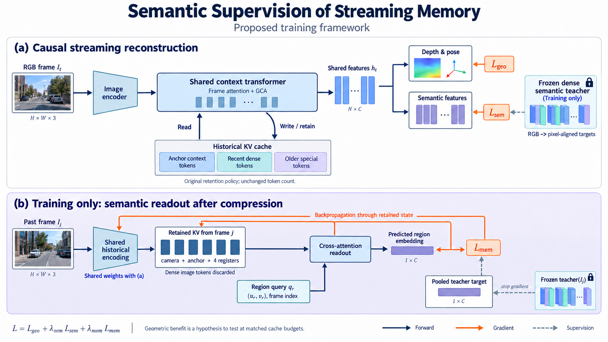

Research Proposal
01 · Research Question and Working Hypothesis
我们研究 RGB 流式重建：每次只处理当前与已经到达的帧，持续预测深度与相机位姿，并输出与几何对齐的语义特征。目标是几何质量与语义可用性同时改善，不要求额外在线深度输入，也不把任务限定为某种物体或某种拍摄轨迹。
LingBot-Map 将较旧帧的密集图像 token 丢弃，只留下 camera、anchor 与四个 register token。原有几何损失会间接训练这些摘要，但没有显式要求摘要保留可读出的区域语义。我们提出的假设是：加入针对压缩后状态的语义监督，可能让历史摘要保留更有助于后续对应与几何预测的信息。
这是需要实验回答的问题，并非已经发现原模型一定丢失了哪些语义。第一版不改成对象槽位、不新增第二套重建主干，也不预先引入在线地图优化。
Research Proposal
02 · One Backbone and Two Outputs

Original proposal schematic · AI-assisted illustration · Scene thumbnails are illustrative, not experimental results · Paper & Caption ↗
保留原模型的图像编码器与交替注意力结构。当前 RGB 经编码得到图像 token，加入 camera、anchor 和 register token；帧内注意力聚合本帧信息，GCA 读取锚点、近期窗口和旧帧摘要。把最后得到的上下文特征记为 h_t。
原 camera head 从相机 token 预测位姿，原 depth head 从图像 token 恢复深度。新增一个轻量语义投影 P，从同一组经过 GCA 的图像特征预测密集语义向量。语义 loss 加在历史交互之后，而不是仅监督与 memory 无关的图像编码器输出。
M_t 表示各层保留的历史 KV 状态。写入仍遵守原来的缓存规则：近期帧保留密集信息；退出窗口后，只保留对应特殊 token 的 KV。这里没有一个已经存在的可学习删除策略。我们训练的是这些保留向量编码什么，以及后续如何读取它们。
Figure 1 上半部分表示流式预测，教师与 loss 仅训练时使用；下半部分是旧帧摘要的辅助读取任务。两处编码使用共享参数，不是两套重建网络。蓝色箭头为前向计算，橙色为梯度，灰色虚线为教师监督；示意场景不是实验结果。
x_t = ImageEncoder(I_t) h_t = ContextTransformer(x_t; M_(t−1)) (D_t, pose_t) = GeometryHeads(h_t) s_t = P(h_t.image_tokens) M_t = RetainOriginalContext(KV_t, M_(t−1))
Research Proposal
03 · Teacher and Current-Frame Semantic Loss
训练时使用冻结的密集语言对齐教师 T，例如 LSeg，为 RGB 产生像素或 patch 对齐的语义向量 s*_t。教师特征先与学生输出的空间分辨率对齐，再做通道归一化。教师输出可提前缓存，训练时不更新教师。普通 CLIP 的整图向量不足以作为密集目标。
当前帧语义 loss 对齐 P(h_t) 与教师目标，m 表示可靠位置的权重，ε 防止分母为零。它的作用是让用于几何预测的共享上下文具有语义结构；这属于常见的特征蒸馏，单独不足以支撑 memory 创新。
第一版冻结图像编码器与教师，在帧内注意力和 GCA 中训练轻量 adapter，同时训练语义投影与几何输出头。帧内聚合决定特殊 token 收集什么，GCA 决定跨帧如何使用；不能只更新语义头就声称历史表示已经改变。
s*_t = stopgrad(normalize(T(I_t))) L_sem = Σ_u m_u [1 − cos(P(h_t(u)), s*_t(u))] / (Σ_u m_u + ε)
Research Proposal
04 · The Core Addition: Read Semantics After Compression
核心辅助任务直接放在压缩之后。训练时选择已经退出近期窗口、且不属于固定锚点的历史帧 j；它的密集图像 token 已被丢弃，只剩原本会保留的六个特殊 token 对应的 KV。要求模型从这份保留状态恢复该帧少量区域的粗粒度语义。
读取 query 只包含历史帧时间/索引和归一化区域位置，不包含旧 RGB、教师向量或当前图像特征。训练用的轻量读取器仅访问帧 j 保留的 KV，预测对应区域的语义目标。目标由教师特征做低分辨率区域池化得到，不要求六个 token 复原完整高分辨率语义图。
这种限制让监督明确落到压缩状态：若摘要没有保存区域差异，读取器无法直接看到原始图像来完成任务。帧索引只编码序列内相对位置，不能使用全局样本 ID；仍须用未见序列、空记忆和跨样本打乱状态检查先验猜测或数据记忆。
辅助读取器只用于训练和诊断，不负责部署时的几何输出。它不会增加推理缓存 token 数量。恢复历史语义只是一个可操作的训练目标；是否保留了对未来几何真正有用的信息，仍由后续帧几何误差检验。
j outside anchor context and local window q_(j,r) = Encode(relative_frame_index_j, region_coordinate_r) ŝ_(j,r) = SemanticReadout(q_(j,r), retained_KV_j) y*_(j,r) = stopgrad(normalize(Pool_r(T(I_j)))) L_mem = mean_(j,r) [1 − cos(ŝ_(j,r), y*_(j,r))]
Worked Example · Proposed Method
05 · Reading a Region from Six Tokens
六个特殊 token 不代表六个区域，也不直接存储六个类别。它们共同形成一个连续向量摘要。以下读取器是我们新增的训练模块，不是 LingBot-Map 已有的区域解码功能。为便于实现，先选定一个实际参与 GCA 的缓存层：帧 j 保留的 K_j、V_j 各包含六行，每行是一个 token 的向量。实际多头形式按同样方式展开。
把教师特征划成 2×2 粗区域是一个最小起点。每个区域 r 用归一化中心坐标 (u_r,v_r) 和序列内帧位置构成 query，经小 MLP 映射到注意力维度。query 不含 RGB、教师特征或样本身份。一个区域 query 对六个 key 计算相关性，再加权读取六个 value，经过共享投影得到预测语义向量。
例如某个区域的注意力权重为 [0.05,0.10,0.45,0.15,0.15,0.10]，另一区域会有另一组权重。数值仅为教学示例：它们说明读取是混合，不表示第三个 token 就是某个物体。读取器可以加入非线性层，但不能将高维输出误当成信息容量凭空增加。
教师目标是对区域内密集特征先池化、再归一化。一个区域混合多个类别时，目标本来就是混合向量；第一版只研究粗语义可读性，不称它为实例分割或精细边界恢复。六 token 容量是否足够，应由未见场景的读取误差验证。
K_j, V_j: 6 × d Q_j: R × d, R = 4 coarse regions (illustrative) A_j = softmax(Q_j K_jᵀ / sqrt(d)), shape R × 6 Z_j = A_j V_j, shape R × d ŝ_(j,r) = normalize(P_mem(Z_(j,r))) y*_(j,r) = normalize(Pool_r(T(I_j))) L_mem = mean_r [1 − ŝ_(j,r) · stopgrad(y*_(j,r))]
Worked Example · Proposed Method
06 · Four Consecutive Frames: Encode, Evict, Read
教学例子：相机沿建筑立面移动，F4 看见一段墙面、窗框和入口；F5、F6 改变视角并出现部分遮挡；F7 仍看见部分重叠区域。这里 F4 不属于固定锚点。把近期历史窗口设为两帧，只为讲解时间关系，不是原论文参数。
处理 F4 时，帧内注意力及共享上下文形成图像 token 和特殊 token，各层生成其 KV。保留的六个特殊 token 已经在此时形成；退出窗口时只是丢弃密集 token，不是临时把所有图像 token 平均成六个新向量。
读取 F5 时，F4 仍是密集近期历史。读取 F6 时，近期历史包含 F4、F5。到读取 F7 时，近期历史是 F5、F6，F4 的密集 token 已经不可访问，F4 只以六个特殊 token 的 KV 出现在旧历史里。
训练在这个时刻做两件事。第一，正常处理 F7，得到深度、位姿与当前语义，计算 L_geo(F7) 和 L_sem(F7)。第二，辅助读取器仅访问 F4 的六个 KV，用 F4 的区域坐标读取语义，计算 L_mem(F4)。两路损失在一次反向传播中共同更新共享参数。
| Current Frame | Recent History Before Reading | Role of F4 |
|---|---|---|
| F4 | 更早历史，省略 | 编码图像与特殊 token |
| F5 | 包含 F4 | 密集历史可读 |
| F6 | F4, F5 | 密集历史可读 |
| F7 | F5, F6 | 仅保留六个特殊 token 的 KV |
Worked Example · Proposed Method
07 · Backward Pass: What Actually Receives Gradients
先看辅助任务。预测区域 embedding 与目标不一致时，梯度经过输出投影 P_mem，到 Z=A·V。一条路径进入 V，改变摘要中承载的内容；另一条路径经过注意力权重 A 进入 K，改变区域 query 如何选择这些内容。query MLP 与读取器本身也会学习，所以仅看读取器变好不能证明摘要真的变好。
K4、V4 在训练图中由 F4 的特殊 token 产生，因此梯度继续进入历史编码中的可训练 adapter，以及形成特殊 token 的帧内聚合过程。冻结的图像编码器与教师不更新；教师目标使用 stop-gradient。KV 不是独立学习的持久参数，优化器更新的是生成 KV 的网络参数。
再看几何路径。F7 的 GCA 用当前 query 读取包括 K4、V4 在内的历史，得到上下文，再预测深度和位姿。L_geo(F7) 能沿该注意力路径回到 K4、V4 与共享 adapter。于是同一份摘要同时受到“区域语义是否读得出来”和“后续几何是否预测正确”的约束。
单次 optimizer step 之后，不会神奇地修好已经输出的 F7；下一次训练前向会用更新后的参数重新生成状态。部署时参数固定，直接生成更受约束的历史摘要。若训练缓存已经 detach，则到 K4、V4 的链条中断，历史编码不会得到这部分梯度。
L_mem(F4) → P_mem → A·V4 → {K4, V4} → historical adapters
L_geo(F7) → geometry heads → GCA(F7) → {K4, V4} → historical adapters
∇θ L = ∇θ L_geo + λ_sem ∇θ L_sem + λ_mem ∇θ L_mem
Teacher targets: stop-gradient; inference: no backward passWorked Example · Proposed Method
08 · Why Geometry Might Improve—and Why It Might Not
可能有用的原因是共享瓶颈的正则化：若摘要只有满足当前几何训练所需的有限统计，加入区域语义约束可能迫使它保留更可区分的结构，使后续 GCA 在外观变化时更容易利用历史。这里的语义不是精确三维对应，也没有直接给出深度修正量。
同样可能失败：读取器只学到“上方常有墙、下方常有地面”的先验；语义细节占用了位姿需要的容量；或者摘要可读性提升，但后续 GCA 根本不利用它。因此 L_mem 不是对几何提升的证明，也不保证所有六个 token 都应该承担语义。
决定性证据是：同预算下，加入 L_mem 后未来帧几何改善；打乱或删除远期状态会削弱这份收益；在冻结读取器、未见序列等诊断中，摘要本身的可读性仍有提升。还应与同维度非语言视觉目标比较，区分语义特有作用与一般重建辅助任务作用。
Research Proposal
09 · Gradient Paths from Loss to Memory and Geometry
L_mem 的梯度从语义读取器进入旧帧保留的 KV，再进入生成这些 KV 的历史特殊 token，以及其帧内聚合与上下文 adapter。它约束的是写入后的信息内容；保留哪些 token 的结构规则不变。因此这里应说“语义监督历史压缩表示”，不应说“学会语义驱动的新增、替换与回收策略”。
后续帧通过同一套 GCA 读取这些已受监督的 KV，得到 h_t，再预测深度和位姿。几何 loss 会同时训练当前解码与历史读取，使保留的信息接受几何任务约束。语义与几何的连接发生在共享状态和共享注意力，而不是让语义分类概率直接修改深度。
训练必须用可微的序列展开重算历史状态。直接读取 detach 后的推理缓存，L_mem 只能训练读取器，无法改变历史写入。可采用截断反向传播，但展开片段需要覆盖写入、退出窗口和后续使用；片段边界之外不宣称有梯度。
这条路径解释了“为什么可能改善”，并不证明“一定改善”。如果历史语义可读性变好，而后续几何不变，说明辅助任务保存的信息没有被几何有效利用，或挤占了几何需要的容量。
L_mem → retained KV → historical special tokens → shared adapters retained KV → later GCA read → h_t → depth / pose L_geometry → geometry heads + shared adapters + differentiable historical state
Research Proposal
10 · A Single Training Objective
第一版只保留三个目标：原有几何监督、当前帧密集语义蒸馏、压缩后历史语义读取。L_geometry 沿用基座的深度和位姿监督及尺度约定；不在同一版同时叠加语义 BA、实例级融合、扩散补全或新的对象目录。
先做与原模型匹配的几何微调，再开启当前帧语义蒸馏，最后加入历史读取任务。λ_sem 与 λ_mem 通过验证集选择，优先观察几何指标与梯度冲突，不能仅按语义 loss 下降决定成功。
训练教师和辅助读取器带来离线成本，需要报告；推理只保留共享 adapter 与当前语义投影。相同 token 配置不等于整个系统零额外开销，额外参数、运行时间和 KV 字节数都要测量。
L_total = L_geometry + λ_sem L_sem + λ_mem L_mem
Research Proposal
11 · Online Inference and Expected Outputs
模型在离线连续片段上训练，部署按 LingBot-Map 的初始化与因果上下文规则处理 RGB 流。初始化锚点遵循原方法；进入流式阶段后不访问未来帧，不需要在线调用教师或做每场景反向优化。
输出为当前深度、位姿与密集语义向量，可累计成带语言特征的三维地图。若教师特征与文本对齐，可用文本查询相关三维区域，或在指定文本类别集合下得到语义分割。实例身份、长期实例关联与动态物体分解不由这个 loss 自动解决。
我们希望观察到的是相同缓存配置下更好的后续几何与跨帧一致性，并保留语义输出能力。不会先验承诺边界、完整度、轨迹和所有场景都同时改善；也不会把 LingBot-Map 每帧保留六 token 误称为严格固定总内存。
Research Proposal
12 · Novelty as a Testable Mechanism
基础改动“共享特征上加语义头和语义 loss”不是足够新的主张。候选方法贡献是：针对流式重建中密集历史被丢弃的具体瓶颈，对实际保留的压缩状态施加区域语义读取监督，并通过后续几何任务联合训练，研究语义如何影响历史表示的保真性与可用性。
相对 ConceptFusion，语义在这里参与训练重建所使用的内部状态，不只附着在已经形成的地图上；相对当前帧语义蒸馏，损失明确检查丢弃密集历史后的可读性；相对优化式语义 SLAM，监督在离线训练中塑造前馈状态，不要求部署时运行语义 BA。
这些是方法定位，不是全球首次的证明。压缩表示重建、辅助任务和语义蒸馏各自都有先例；需要继续检索相邻工作，并靠同预算消融证明组合机制的必要性。若只改善当前语义头，不能写成 memory 改善。
Research Proposal
13 · Experiments That Decide the Claim
决定性比较是 D 对 C：在当前帧已经有语义监督的前提下，压缩后的读取任务是否进一步改善后续几何。A、B 负责排除额外微调与新增输出头的影响。各组保持相同数据、序列长度、缓存策略与训练步数，明确列出参数差异。
同时报告深度/点云精度和完整度、ATE/RPE、跨帧一致性、语义指标，以及速度和显存；不能删掉难点后只报告精度。按短序列、长间隔历史利用和未见场景分别统计，检验模型是否真正利用压缩历史。
空记忆、跨样本打乱旧帧 KV、移除远期历史是诊断对照。还需匹配维度与计算量的非语言视觉特征监督，区分语言语义收益与一般额外监督收益。若无相应几何增益，结论应收缩为语义输出能力，而不是扩大 novelty。
| Variant | Supervision | Purpose |
|---|---|---|
| A · Geometry Baseline | L_geometry | 同预算微调基线 |
| B · Detached Semantics | 几何 + 仅训练语义头 | 只附加语义输出 |
| C · Shared Semantics | L_geometry + L_sem | 共享语义监督的收益 |
| D · Compressed-State Readout | L_geometry + L_sem + L_mem | 压缩状态监督的增量收益 |
Research Proposal
14 · How Earlier Papers Motivate This Design
LingBot-Map 提供具体问题发生的位置：旧帧密集 token 被丢弃，少量特殊 token 留下。SLARM 启发语言特征监督与重建输出的结合，但不能直接替代历史状态的因果验证。ConceptFusion 提供像素对齐开放词汇特征的来源与语义地图用途。
SNI-SLAM 和 SemGauss-SLAM 提醒我们核对梯度路径：有语义 loss 不等于几何受到了有效监督；后文保留它们的原图与关键反例。SGS-SLAM 说明语义可以参与几何估计，但其 RGB-D 在线优化条件与这里不同。
Ray-Aware Memory 与 Slot3R 的启发是可靠寻址仍需几何条件。我们不会因为两处语义相似就融合几何，也不施加“同一个物体必须同一深度”的约束。这使方案适用于一般连续场景，而非依赖特定对象或固定拍摄方式。
Paper Analysis
15 · Scope and Reading Versions
这四篇是用户指定的基础文献，不作为近期新论文介绍。它们多数使用 RGB-D 和逐场景在线优化，而 LingBot-Map 的迁移目标是学习式 RGB 流式重建。可以借鉴监督机制，不能直接照搬输入条件、速度或精度。
这里区分三个问题：输出是否有语义；语义损失是否改变几何预测；有限历史状态是否因语义监督而更有用。三个问题需要不同对照实验。
| Work | First Submission | Read Version | Core Setting |
|---|---|---|---|
| ConceptFusion | 2023-02-14 | 2302.07241v3 | RGB-D feature fusion |
| SNI-SLAM | 2023-11-18 | 2311.11016v3 | RGB-D implicit mapping |
| SemGauss-SLAM | 2024-03-12 | 2403.07494v4 | RGB-D Gaussian mapping and BA |
| SGS-SLAM | 2024-02-05 | 2402.03246v6 | RGB-D semantic tracking and mapping |
Paper Analysis
16 · ConceptFusion: Features Attached to Geometry

Krishna Murthy Jatavallabhula et al. · Original figure, unmodified · CC BY-SA 4.0 · Paper & Caption ↗
沿原图，先对当前 RGB 提取全图及区域 CLIP 特征，再把区域信息组合成像素对齐特征。类别无关分割提供区域，而不是先限定一组类别再分类。全局特征保留上下文，局部特征提供较细的区域区别；区域重叠时还需要融合与归一化。
之后依赖深度、相机位姿和几何一致性，将当前像素对应到地图点，融合颜色与语义向量。公式中的 c 是历史融合权重，α 是当前观测权重。这里的空间对应先由几何建立，语义向量不是直接拿来替代相机变换。
文本查询编码到同一特征空间后，可以检索三维区域。它说明如何得到开放词汇地图，但没有通过训练语义 loss 改善几何。它适合作为“已有几何上附加语义”的对照。
f_new = (c_old · f_old + α · f_pixel) / (c_old + α)
Paper Analysis
17 · ConceptFusion: Evidence and Computational Boundary
UnCoCo 的 structured text query 评测中，ConceptFusion 的 3D mIoU 为 0.378，LSeg-3D 为 0.122，OpenSeg 为 0.153。这是语义检索与分割指标，不能解读为重建误差下降。数据集包含 20 段 RGB-D 序列、78 个物体，其中 2 段用于参数选择。
论文的基础建图速度与语义特征提取开销分开报告；离线特征提取约需 10–15 秒/图（RTX 3090）。不能只摘建图帧率，把整个语义系统说成实时。稠密高维特征也会增加地图内存。
Paper Analysis
18 · SNI-SLAM: Joint Features Do Not Imply Joint Gradients

Siting Zhu et al. · Original figure, unmodified · Copyright retained; arXiv non-exclusive distribution license · Paper & Caption ↗
原图将几何、外观和语义特征放到统一融合过程：几何编码作为 query，外观作为 key，语义作为 value，通过交叉注意力产生融合信息。三维地图采用分层特征平面，解码颜色、语义和截断符号距离。DINOv2 用于视觉特征提取；它不是图文对齐的 VLM。
必须分清两个监督：语义分类使用交叉熵；特征级 L1 监督约束提取特征与地图插值得到的特征。论文明确对语义分类 loss 做梯度截断，避免其干扰几何和外观。因此，“SNI-SLAM 证明语义交叉熵直接改善几何”是不准确的。
特征融合和特征级监督可以改变共享表示的学习，但不能把整个系统收益都归到语义 CE。符号 f_extract 表示提取并融合的目标特征，f_interp 表示地图插值得到的特征。
L_feature = ||f_extract − f_interp||₁
Paper Analysis
19 · SNI-SLAM: Reading the Ablation Correctly
Table 6 在 Replica office0 上逐项加入模块，报告的轨迹 RMSE从 0.83 cm 降至 0.33 cm，mIoU 从 71.5 升至 86.0。这个表是单场景的累积消融，不是每个组件分别相对完整系统移除的独立消融。
从加入分层语义地图后的 0.55 cm / 84.1，到再加入特征 loss 的 0.47 cm / 85.0，可以看到该设置下特征级监督的关联收益；后续还加入解码器与融合模块。不能由最终数值反推出分类损失的单独作用。
| Office0 Setting | Trajectory RMSE (cm) ↓ | mIoU (%) ↑ |
|---|---|---|
| SR | 0.83 | 71.5 |
| + HSM | 0.55 | 84.1 |
| + Feature Loss | 0.47 | 85.0 |
| + Decoder | 0.43 | 85.3 |
| + Fusion | 0.33 | 86.0 |
Paper Analysis
20 · SemGauss-SLAM: Where Semantics Reaches Geometry

Siting Zhu et al. · Original figure, unmodified · Copyright retained; arXiv non-exclusive distribution license · Paper & Caption ↗
原图先从 RGB-D 建立带语义向量的高斯地图。冻结 DINOv2 提供密集视觉特征目标，渲染特征与目标做 L1 对齐，语义解码器再预测标签。地图优化还包含 RGB、深度和语义分类监督。
关键连接出现在 semantic-informed bundle adjustment：把共同可见关键帧中的语义渲染，利用深度和相机变换重投影到另一视图，对齐同一表面的语义，并联合调整地图与位姿。变换作用于三维点和采样位置，不是把旋转矩阵直接乘到语义向量上。
常规 tracking 使用 RGB 与深度残差，不能笼统地说每个跟踪步骤都有语义 loss。语义特征蒸馏与语义 BA 是两个不同机制。
Paper Analysis
21 · SemGauss-SLAM: A Useful Negative Result
Table V 的 room0 消融很适合回答本研究问题：移除 feature loss，mIoU 从 92.81 降到 83.60，但 ATE 和深度误差仍是 0.26 cm 与 0.54 cm。这个对照不支持“更强的特征监督自动带来更好几何”。
Table VI 移除语义 BA 后，room0 的 ATE/Depth L1 为 0.35/0.66 cm，完整系统为 0.26/0.54 cm。这里才提供了该优化设置下语义跨视图约束与几何收益的证据。它不保证 RGB-only 前馈模型也有同样收益。
| Room0 Setting | ATE (cm) ↓ | Depth L1 (cm) ↓ | mIoU (%) ↑ |
|---|---|---|---|
| Full | 0.26 | 0.54 | 92.81 |
| Without Feature Loss · Table V | 0.26 | 0.54 | 83.60 |
| Without Semantic BA · Table VI | 0.35 | 0.66 | 90.15 |
Paper Analysis
22 · SGS-SLAM: Semantic Rendering Residuals

Mingrui Li et al. · Original figure, unmodified · CC BY-SA 4.0 · Paper & Caption ↗
沿原图，高斯同时保存颜色、几何与语义颜色，按相同的可见性和混合权重渲染 RGB、深度与语义图。这里的语义颜色是标签表示，不是开放词汇 CLIP embedding。
跟踪时固定地图，用渲染与观测的残差调整位姿；建图时固定当前位姿，更新高斯参数。语义渲染误差能通过投影和混合权重关联到几何，因而比“在固定地图上训练分类头”更接近几何约束。
关键帧筛选同时考虑几何重叠与语义冗余：高语义重叠不一定意味着应优先保留，也可能意味着重复。这个选择策略与语义 loss 都会影响最终系统表现，需要分别消融。
Paper Analysis
23 · SGS-SLAM: What the Numbers Support
Table 4 在 ScanNet scene0000_00 上，移除语义通道后 Depth L1 为 9.15 cm、ATE 为 13.81 cm；完整系统为 6.18 cm、11.26 cm。相同表里移除深度通道会显著恶化，说明语义并不能取代几何证据。
Table 5 移除语义关键帧筛选阈值后，深度误差为 8.44 cm、ATE 为 12.89 cm。系统收益不应全部归因于一种 loss。报告的 Replica SLAM 速度为 2.11 FPS，快速高斯渲染不等于整个在线优化系统达到视频帧率。
这些实验依赖语义标签与 RGB-D 条件。迁移时应把标签质量、额外深度输入、在线优化和计算预算一起列出来，不能直接把不同论文的误差拼成排行榜。
Discussion
Reading Questions
Where is the semantic loss applied?
当前语义 loss 加在 GCA 之后的共享图像特征；memory loss 加在旧帧密集 token 丢弃后保留的 KV 状态。两者监督位置不同。
What changes in the memory?
保留 token 的规则不变；通过可微训练改变特殊 token/KV 编码的信息，以及共享上下文如何读取。第一版不声称训练了新增或回收策略。
How can it improve geometry?
后续几何读取相同的历史状态，语义与几何损失联合约束共享表示。几何收益必须由 D 对 C 的同预算实验确认。
What is new beyond semantic distillation?
候选贡献是针对压缩后历史的区域语义读取监督及其几何用途。普通语义头不是核心；也尚不能声称首创或性能领先。
Is the system online?
离线训练、遵循基座初始化规则的因果流式推理。训练教师和辅助历史读取器不需要部署在线运行。
References
- ConceptFusion · 2302.07241v3 ↗
- SNI-SLAM · 2311.11016v3 ↗
- SemGauss-SLAM · 2403.07494v4 ↗
- SGS-SLAM · 2402.03246v6 ↗
- LingBot-Map ↗
- SLARM · Earlier Note ↗
- Ray-Aware Pointer Memory · Earlier Note ↗
- Slot3R · Earlier Note ↗
- SpatialSpeak · Earlier Note ↗
- Totem · Earlier Note ↗
- SMoRe · Earlier Note ↗
- Ledger · Earlier Note ↗
Four original figures are reproduced for focused scholarly commentary. Original copyright is retained. ConceptFusion and SGS-SLAM figures retain their CC BY-SA 4.0 licenses; SNI-SLAM and SemGauss-SLAM use the arXiv non-exclusive distribution license, which is not a general reuse license. No new license is asserted for those figures. This note is based on paper reading; implementation gradient paths require a separate code audit. Figure 1 of our proposal is a newly created AI-assisted explanatory schematic, explicitly requested for this design. It does not replace or reproduce an original paper figure; scene thumbnails are illustrative.
Verified on 2026-10-19. Paper results refer to the linked versions. Repository references were checked on this date.